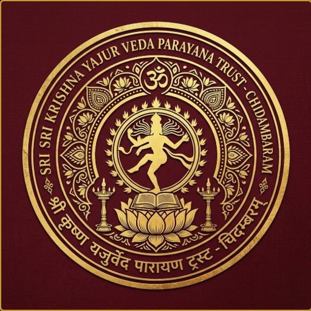

SRI KRISHNA YAJUR VEDA PARAYANA TRUST
ஸ்ரீ கிருஷ்ண யஜுர் வேத பாராயண டிரஸ்ட் - சிதம்பரம்
Thillai Nataraja Kshetram, Chidambaram
॥ उत्सवो वै परमोत्सवः ॥
Function Days & Sacred Festivals

Chidambaram Nataraja Temple is celebrated worldwide for its grand annual Brahmotsavams. Below is the full schedule of auspicious function days, rituals, and special Krishna Yajur Veda Parayana observances.
The crown jewel of Chidambaram festivals. Lord Nataraja and Sivakami Ambal are brought in a grand chariot (Therottam) on the 9th day. On the 10th day at dawn, the historic Maha Abhishekam takes place in the Raja Sabha with 108 sacred dravyas, followed by the majestic Ananda Tandavam procession.
Celebrated in the Tamil month of Aani when the Uthiram star coincides with the full moon. Lord Nataraja performs the Ananda Tandava as He moves into the Kanaka Sabha after an ornate midnight Abhishekam witnessed by thousands.
A world-renowned 5-day cultural festival held in the illuminated courtyard of the 1000-Pillar Hall. World-class classical dancers offer their performances as an act of devotion directly to the Lord of Dance, Nataraja.
The auspicious night of Lord Shiva. The temple remains open throughout the night with 4 Kaala special Abhishekas to the Sphatika Lingam accompanied by Rudra Homam, Sri Rudram chanting, and Bilva archana.
A paramount celebration for the Sri Krishna Yajur Veda Parayana Trust. Thousands of Vedic students and scholars gather at the Sivaganga Tank and Kanaka Sabha to renew the sacred Yajnopavita and commence the study of Krishna Yajur Veda Taittiriya Samhita.
Between 04:30 PM and 06:00 PM during Pradosha kalam, grand Abhishekam is conducted for the huge granite Nandi in the outer courtyard with milk, curd, honey, panchamirtham, and sandal paste.
| Day | Ceremony / Ritual | Vahanam (Vehicle Procession) | Significance |
|---|---|---|---|
| Day 1 | Dwajarohanam (கொடியேற்றம்) | Simha Vahanam (Lion) | Sacred flag hoisted on temple gold flagpole |
| Day 2 | Velli Surya Prabhai | Surya Mandalam | Solar energy offering to Nataraja |
| Day 3 | Bhootha Vahanam | Silver Ghost Vehicle | Control over elemental entities |
| Day 4 | Kailasa Vahanam | Mount Kailash Carriage | Vision of Lord Shiva at Kailasa |
| Day 5 | Yaanai Vahanam (Elephant) | Gaja Vahanam | Royal honor and splendour |
| Day 6 | Velli Ther (Silver Chariot) | Silver Car | Night procession through 4 Mada Streets |
| Day 7 | Thanga Pallakku (Golden Palanquin) | Gold Palanquin | Goddess Sivakami special alankaram |
| Day 8 | Kudirai Vahanam (Horse) | Ashwa Vahanam | Bhikshatana Moorthy hunting procession |
| Day 9 | Maha Ratham (தேரோட்டம் - Chariot) | Five Mighty Temple Chariots | Lord Nataraja & Sivakami ride the gigantic Car |
| Day 10 | ARUDHRA DARISANAM (ஆருத்ரா தரிசனம்) | Ananda Tandavam into Kanaka Sabha | Dawn Maha Abhishekam at Raja Sabha & Cosmic Dance |